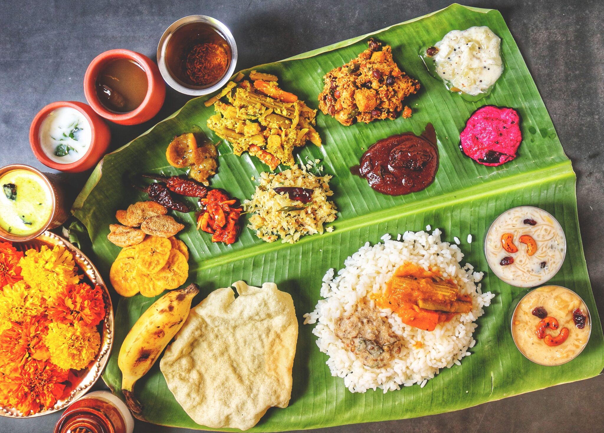

Cusines

Indian cuisine is as diverse as its culture, steeped in rich traditions, regional specialties, and centuries-old cooking methods. It’s characterized by a dazzling variety of flavors, spices, and ingredients, often shaped by geography, religion, and history.
North Indian Cuisine:
Known for its rich and creamy gravies, buttery naans, and a wide variety of bread like roti, paratha, and kulcha. Dishes like butter chicken, tandoori chicken, biryanis, and dal makhani are iconic. Dairy products like ghee, paneer, and yogurt play a significant role.
South Indian Cuisine:
Focused on rice-based dishes, this cuisine includes dosas, idlis, and sambar. Coconut, tamarind, and curry leaves are often used for flavoring, and dishes like rasam and curries have a unique sour-spicy profile.
East Indian Cuisine:
Known for its use of mustard oil, fish, and rice, with a balance of spicy, sour, and sweet flavors. Bengali cuisine, for example, offers dishes like macher jhol (fish curry), and sweets like rasgulla and sandesh.
West Indian Cuisine:
Known for bold spices, vibrant flavors, and distinct vegetarian options, especially in Gujarat and Rajasthan. Dishes include dhokla, kadhi, and Goan curries, which incorporate coconut and seafood.